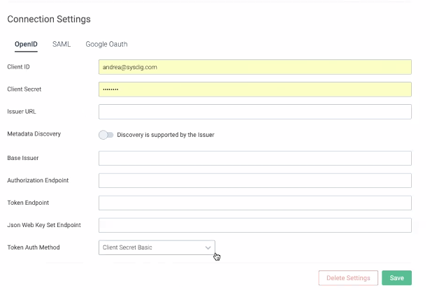

OpenID Connect (On-Prem)
Note
These instructions are specific to On-Premises Deployments of the Sysdig platform. If you are using the cloud-based (SaaS) Sysdig platform, refer to OpenID Connect (SaaS) instead.
OpenID support in the Sysdig platform allows authentication via your choice of Identity Provider (IdP).
This section describes how to integrate and enable OpenID Connect with both Sysdig Monitor and Sysdig Secure.
Overview
Summary of OpenID Functionality in Sysdig
The Sysdig platform ordinarily maintains its own user database to hold a username and password hash. OpenID instead allows for redirection to your organization's IdP to validate username/password and other policies necessary to grant access to Sysdig application(s). Upon successful authentication via OpenID, a corresponding user record in the Sysdig platform’s user database is automatically created, though the password that was sent to the IdP is never seen nor stored by the Sysdig platform.
Basic Enablement Workflow
Step | Options | Notes | ||
|---|---|---|---|---|
1. Know which IdP your company uses and will be configuring. | These are the OpenID Providers for which Sysdig has performed detailed interoperability testing and confirmed how to integrate using their standard docs. If your OpenID Provider is not listed (including ones that do not support OpenID Connect Discovery), it may still work with the Sysdig platform. Contact Sysdig Support for help. | |||
2. Decide the login flow you want users to experience: 3 options | Click OpenID button | From
| ||
Type/bookmark a URL in browser | Monitor: | |||
Log in from an IdP interface | The individual IdP integration pages describe how to add Sysdig to the IdP interface. You will need your Sysdig customer number on hand. | |||
3. Perform the configuration steps in your IdP interface and collect the resulting config attributes. | Collect metadata URL (or XML) and test it. If you intend to configure IDP-initiated login flow, Find Your Customer Number and have it on hand. It will be referenced in later configuration steps as | |||
4a. Log in to Sysdig Monitor 4b. Configure settings for Sysdig Secure using scripts. | 4a. Sysdig Monitor only 4b. Sysdig Monitor (optional) or Sysdig Secure |
Administrator Steps
Configure IdP
Select the appropriate IdP link below, and follow the instructions:
UI-Based: Configure OpenID in Settings (Monitor Only)
At this time, the Authorization UI is available only for Sysdig Monitor.
To enable baseline OpenID functionality:
Enter OpenID Basic Connection Settings
Log in to Sysdig Monitor or Sysdig Secure as administrator and select
Settings.
Select
Authentication.Select the
OpenIDtab.
Enter the relevant parameters (see table below) and click
Save.
Connection Setting | Description |
|---|---|
Client ID | ID provided by your IdP |
Client Secret | Secret provided by your IdP |
Issuer URL | URL provided by your IdP. Example: |
Note
Okta, OneLogin, and Keycloak support metadata auto-discovery, so these settings should be sufficient for those IdPs.
Enter OpenID Additional Settings (if needed)
In some cases, an OpenID IdP may not support metadata auto-discovery, and additional configuration settings must be entered manually.
In this case:
On the OpenID tab, toggle the
Metadata Discoverybutton toOFFto display additional entries on the page. Enter the relevant parameters derived from your IdP (see table below) and click
Save.
Connection Setting | Description |
|---|---|
Base Issuer | Required. Often the same Issuer URL, but can be different for providers that have a separate general domain and user-specific domain (for example, general domain: https://openid-connect.onelogin.com/oidc, user-specific domain: https://sysdig-phil-dev.onelogin.com/oidc)f |
Authorization Endpoint | Required. Authorization request endpoint |
Token Endpoint | Required. Token exchange endpoint |
JSON Web Key Set Endpoint | Required. Endpoint that contains key credentials for token signature verification |
Token Auth Method | Authentication method. Supported values: |
Select OpenID for SSO
Select
OpenIDfrom theEnabled Single Sign-Ondropdown.Click
SaveAuthentication.
Script-Based: Configure OpenID Using Scripts (Monitor or Secure)
The configuration of the OpenID Connect feature can be viewed, updated, and deleted by the "super" Admin. An oidc_config.sh helper script is available in the SSO folder at sysdig-cloud-scripts repository to assist in completing this configuration. Invoking the script with no options will display help text.
# ./oidc_config.sh Must specify the Sysdig App whose OpenID Connect configuration will be viewed/set Usage: ./oidc_config.sh [OPTIONS] Affect OpenID Connect login settings for your Sysdig software platform installation
To use the helper script, modify env.sh to set the required values for API_TOKEN of the "super" Admin user and the URL for accessing the Sysdig platform API (which will be the same URL that your users access for the Sysdig Monitor application).
Note
Depending if the API_TOKEN has been obtained from the Sysdig Monitor or Sysdig Secure application UI, the settings will be applied to the consequent product.
Initially no OpenID settings are set. A initial run of the script would confirm that:
# ./oidc_config.sh No openid settings are set Run for further info: ./oidc_config.sh -h
Add the -s option to set the OpenID Connect configuration for a particular Sysdig application. When setting the config, you'll use additional options to provide the config details you saved in the earlier OpenID Provider configuration step.
Config Detail | Option |
|---|---|
Issuer URL | |
Client ID | |
Client Secret | |
If the configuration is successfully posted to the Sysdig platform, the new configuration will be echoed back.
An example of creating the two separate OpenID Connect configurations for both Monitor and Secure, each using Okta as an OpenID Provider:
# ./oidc_config.sh -s -u https://dev-824158.oktapreview.com -i 0oafpykpv7JMS4gMe0h7 -e ZctTGJMNJmuseEJHJGhvnb0pniZvz9Gf6RStxhHn
{
"authenticationSettings": {
"id": 1,
"version": 1,
"createdOn": 1547541009000,
"type": "openid",
"scope": "SYSTEM",
"settings": {
"issuer": "https://dev-824158.oktapreview.com",
"clientId": "0oafpykpv7JMS4gMe0h7",
"clientSecret": "ZctTGJMNJmuseEJHJGhvnb0pniZvz9Gf6RStxhHn",
"metadataDiscovery": true
}
}
}Once you've completed this configuration, clicking the OpenID button at the login screen of the appropriate Sysdig application(s) should redirect to your OpenID Provider for authentication.
If you wish to delete your OpenID Connect configuration, invoke the -d option. If successful, the disabled configuration will be printed.
./oidc_config.sh -d
{
"authenticationSettings": {
"id": 1,
"version": 1,
"createdOn": 1547541009000,
"type": "openid",
"scope": "SYSTEM",
"settings": {
"issuer": "https://dev-824158.oktapreview.com",
"clientId": "0oafpykpv7JMS4gMe0h7",
"clientSecret": "ZctTGJMNJmuseEJHJGhvnb0pniZvz9Gf6RStxhHn",
"metadataDiscovery": true
}
}
}User Experience
As noted in the Basic Workflow above, you can offer users three ways to log in with a OpenID configuration:
They can begin at the Sysdig SaaS URL and click the OpenID button.
Monitor: https://HOSTNAME/ or Secure: https://HOSTNAME/secure .
They will be prompted to enter a Company Name, so the Sysdig platform can redirect the browser to your IdP for authentication.
=

You can provide an alternative URL to avoid the user having to enter a company name, in the format:
Monitor:
https://HOSTNAME/api/oauth/openidSecure:https://HOSTNAME/api/oauth/openid?product=SDSYou can configure an IdP-initiated login flow when configuring your IdP. The users then select the Sysdig application from your IDP's app directory and do not browse directly to a Sysdig application URL at all.
Note
See also User and Team Administration for information on creating users.